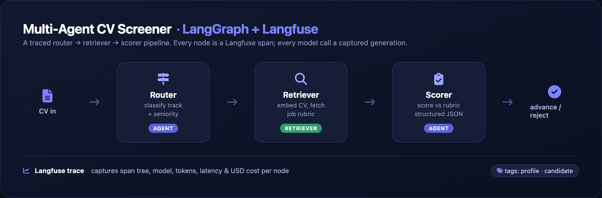
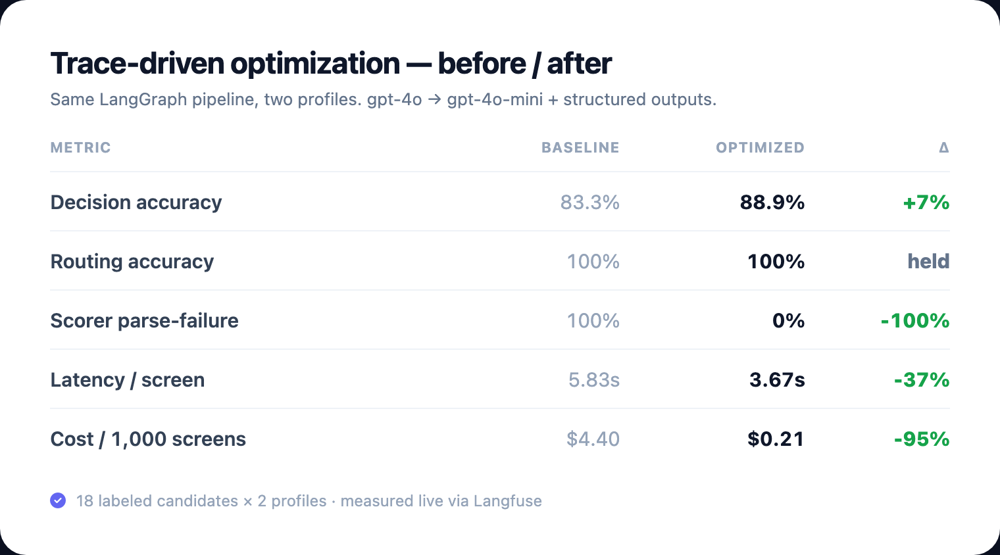

A three-agent router → retriever → scorer pipeline in LangGraph, fully instrumented with Langfuse. I read the traces, found the failure modes, and fixed them — with measured before/after results.
Every node is a Langfuse span; every model call a captured generation with token usage and cost.

Paste a CV, pick a profile, and watch each agent decide — with a per-node cost breakdown and a link to the Langfuse trace.
Same pipeline, two profiles (gpt-4o → gpt-4o-mini + structured outputs). Numbers measured live through Langfuse over 18 labeled candidates.

The free-text scorer never emitted a parseable score (100% fallback). Fixed with schema-constrained JSON — 100% → 0%.
gpt-4o on bounded tasks drove cost and latency. Moving to gpt-4o-mini cut cost ~95% with no accuracy loss.
Routing was already 100%; explicit prompts kept it there on the cheaper model — no regression.
Each fix traces back to a specific Langfuse observation — not guesswork.